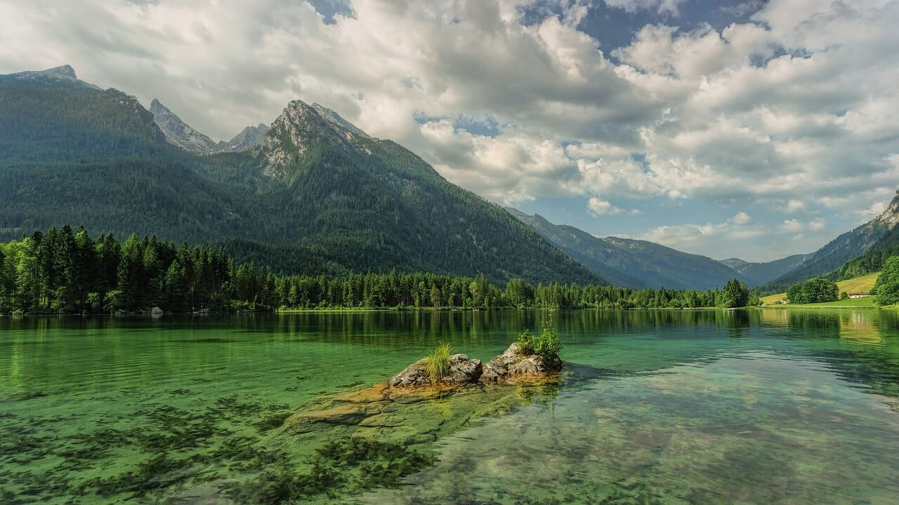

A escassez de água é um dos problemas mais urgentes enfrentados pelo nosso planeta, neste artigo, vamos explorar a crise da água e destacar a importância das ações que podem transformar o mundo em um lugar mais sustentável.
A água é essencial para a vida em nosso planeta, ela sustenta os ecossistemas, é fundamental para a produção de alimentos e é necessária para a sobrevivência humana, no entanto, apesar da importância crucial da água, estamos enfrentando uma crise global que ameaça seu acesso e qualidade.
A crise da água é resultado de vários fatores, incluindo o crescimento populacional, a urbanização, as mudanças climáticas e a má gestão dos recursos hídricos, atualmente, milhões de pessoas ao redor do mundo não têm acesso a água potável adequada, o que leva a problemas de saúde e agravamento da pobreza.
Para combater a crise da água e transformar o mundo em um lugar mais sustentável, é necessário adotar ações efetivas, aqui estão algumas iniciativas que podem fazer a diferença:
Uma das maneiras mais eficazes de lidar com a crise da água é conservar esse recurso precioso, isso pode ser feito por meio de medidas simples, como reduzir o consumo doméstico, consertar vazamentos e utilizar técnicas de irrigação mais eficientes na agricultura.
Os ecossistemas aquáticos, como rios, lagos e oceanos, desempenham um papel fundamental na manutenção do ciclo da água e na garantia de sua qualidade, proteger esses ecossistemas é essencial para preservar a disponibilidade de água limpa e saudável.
A construção e manutenção de infraestruturas hídricas adequadas são fundamentais para garantir o acesso à água potável e o tratamento de esgoto, é necessário investir em sistemas de abastecimento de água e saneamento básico eficientes, especialmente em regiões com escassez hídrica.
A educação desempenha um papel crucial na conscientização sobre a importância da água e na promoção de práticas sustentáveis, é fundamental investir em programas educacionais que ensinem as gerações futuras sobre o uso responsável da água e as consequências da sua escassez.
A crise da água é um problema global que requer esforços conjuntos, a cooperação internacional entre governos, organizações não governamentais e empresas privadas é essencial para encontrar soluções sustentáveis e garantir o acesso à água para todos.
A crise da água é um desafio urgente que exige ações imediatas e transformadoras. Ao conservar a água, proteger os ecossistemas, investir em infraestrutura, promover a educação e fortalecer a cooperação internacional, podemos fazer a diferença e construir um futuro sustentável para todos, é hora de agir!